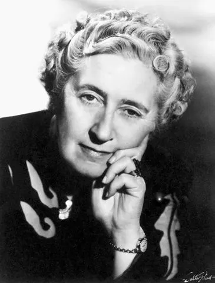

J.K. Rowling
Creator of the Wizarding World. Known for immersive fantasy and character-driven storytelling.
Top book: "Harry Potter and the Prisoner of Azkaban"Want your favorite author featured on this page? Promote his books and give him high ratings!
Creator of the Wizarding World. Known for immersive fantasy and character-driven storytelling.
Top book: "Harry Potter and the Prisoner of Azkaban"
Queen of Crime. Master of mystery, deduction and psychological suspense.
Top book: "10 Little Niggers"
Master of the Macabre, Chronicler of Small-Town Terror, and the Voice in the Drain.
Top book: "The Shining"